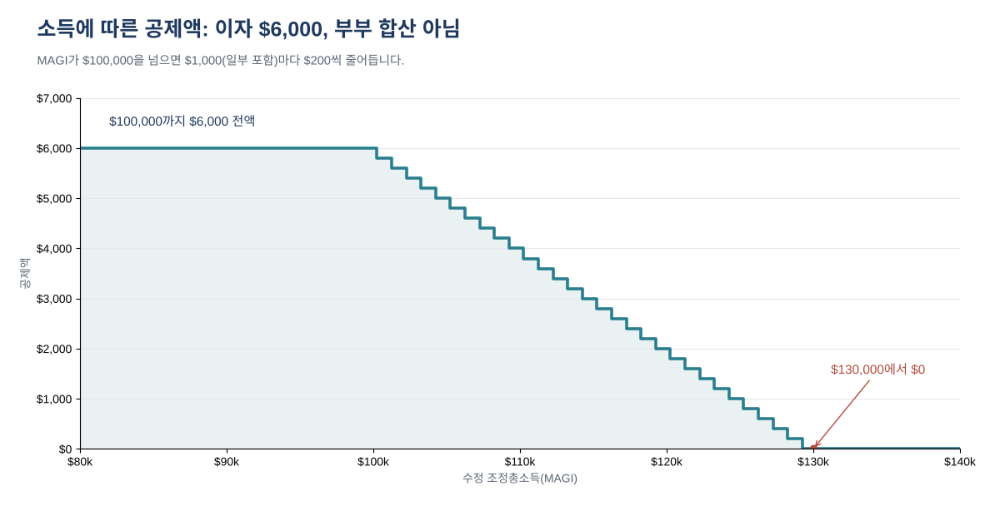

개인 자동차 대출 이자는 예전에는 공제할 수 없었습니다. 2025년 세법 개정으로 바뀌었습니다. 2025년부터 2028년 과세연도까지, 미국에서 조립된 새 차를 대출로 산 사람은 표준공제를 받더라도 매년 이자를 최대 $10,000까지 공제할 수 있습니다.
다만 조건이 까다롭습니다. 새 차여야 하고, 최근에 받은 대출이며 차가 담보로 잡혀 있어야 하고, 미국에서 최종 조립됐어야 하며, 소득이 많을수록 공제액이 줄어듭니다. 이 글은 대상 여부, 5단계 계산법, 계산 예시 4가지를 차례로 설명합니다.
이런 분께 필요합니다: 2024년 이후 새 승용차, SUV, 픽업트럭, 오토바이를 개인 용도로 할부 구입했고, 신고 전에 2026년에 내는 이자로 연방 세금이 얼마나 줄어드는지 알고 싶은 분.
일곱 가지가 모두 "예"여야 합니다. 하나라도 "아니요"이면 이 공제 대상이 아닙니다.
딜러의 차량 정보 라벨(윈도 스티커)에 최종 조립지가 적혀 있습니다. 무료 NHTSA VIN Decoder에 VIN을 넣으면 제조 공장도 확인할 수 있습니다. 어떤 방법이든 화면 캡처나 사본을 세금 기록과 함께 보관하세요.
재융자(refinance)를 했다면? 대상 대출을 재융자한 경우, 원래 잔액 범위 안의 이자는 대체로 계속 공제 대상입니다. 현금을 더 받았거나 공동 차주를 추가했다면 세무 전문가에게 확인하세요.
| A | B | C | D | |
|---|---|---|---|---|
| 신고 유형 | 단독 등 | 단독 등 | 부부 합산 | 단독 등 |
| MAGI | $85,000 | $112,500 | $230,000 | $150,000 |
| 2026년에 낸 이자 | $3,200 | $4,000 | $11,000 | $6,000 |
| 2단계: $10,000 한도 적용 | $3,200 | $4,000 | $10,000 | $6,000 |
| 3단계: 기준 초과액 | $0 | $12,500 | $30,000 | $50,000 |
| 4단계: $1,000 단위 (올림) | 0 | 13 | 30 | 50 |
| 5단계: 감액 (× $200) | $0 | $2,600 | $6,000 | $10,000 |
| 공제액 | $3,200 | $1,400 | $4,000 | $0 |

아래 그래프는 공제액이 얼마나 빨리 줄어드는지 보여 줍니다. 단독 신고자가 이자 $6,000을 냈다면 MAGI $100,000까지는 전액, $130,000에서는 $0입니다.

공제는 과세소득을 줄이는 것이지, 세금을 같은 금액만큼 줄이는 것이 아닙니다. 대략적인 절세액은 공제액에 본인의 최고 연방 세율을 곱해 구합니다. 예시 A의 공제액 $3,200은 12% 구간이면 약 $384, 22% 구간이면 약 $704입니다. 주 세금 처리는 주마다 다릅니다.
| 언제 | 무엇을 |
|---|---|
| 지금 | 구매 계약서, 대출 계약서(대출 시작일과 담보 표시), 윈도 라벨 또는 VIN 조회 결과 보관 |
| 매달 | 대출 명세서 보관(낸 이자 확인) |
| 2027년 초 | 대출기관의 2026년 이자 명세서 |
| 2027년 4월 15일 | 대부분의 신고자에게 2026년 연방 신고 마감일 |
| 2025~2028년 | 이 공제가 적용되는 과세연도 |
이 기록은 공제를 신청한 신고서를 제출한 날부터 일반적으로 3년간 보관하세요.
대상 여부 질문, 이자 기록표, 입력 세 개로 끝나는 계산기(감액 계산은 접어 둠), 위 네 가지 예시가 들어 있는 자동차 대출 이자 공제 계산기 2026(4쪽 PDF 가이드 포함)은 아래 무료 키트 다운로드에서 가입 없이 무료로 받으실 수 있습니다.
이 글은 교육용 일반 정보이며 세무·법률·재무 자문이 아닙니다. 리스, 중고차, 사업용 차량, 주 세법은 다루지 않습니다. 2026년 서식과 안내서는 2025년과 다를 수 있으니 본인 상황은 세무 전문가에게 확인하세요.